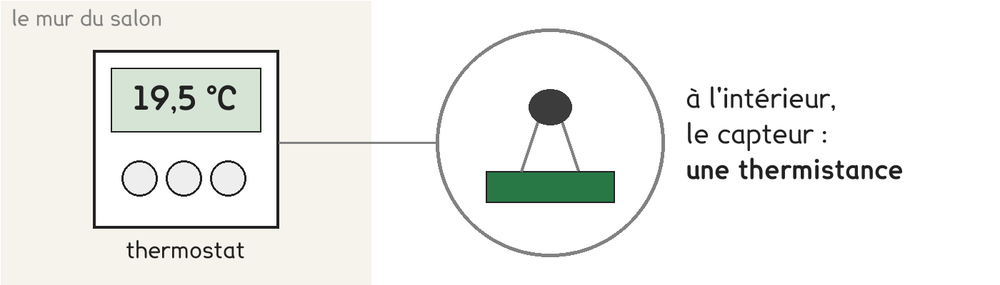
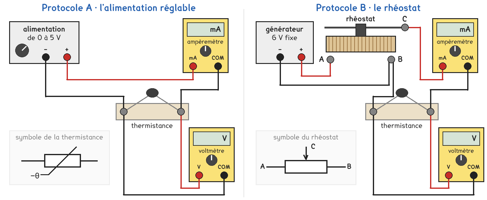
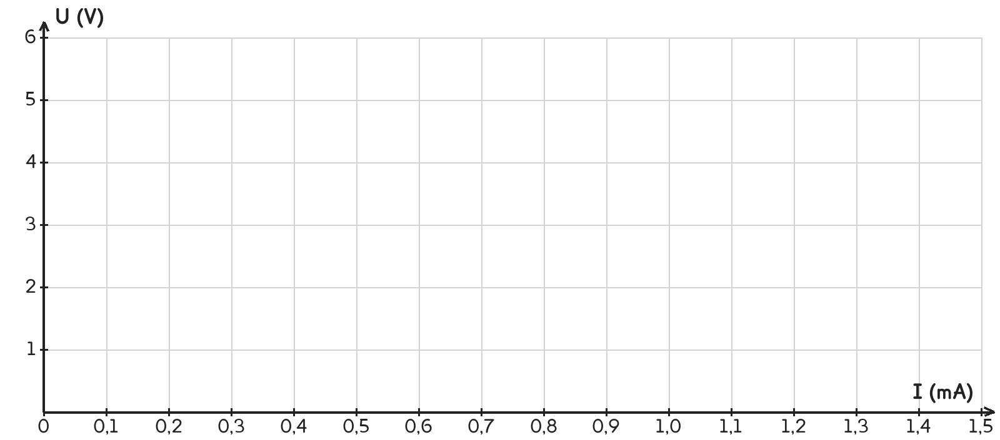

2de Bac Pro · toutes spécialités · TP commun 2DE-01
Comment le thermostat connaît-il la température de la pièce ?
3 figures
Sujet. Le thermostat du salon affiche 19,5 °C et allume le chauffage quand il fait trop froid. À l’intérieur, pas de thermomètre à liquide : un petit composant électrique, la thermistance, lui sert de capteur.

Problématique : comment le thermostat connaît-il la température de la pièce ?
Au laboratoire, on étudie une thermistance CTN de 10 kΩ, d’abord à la température de la salle, puis dans l’eau à 50 °C.
Le fabricant donne la résistance de la thermistance selon sa température.
| Température (°C) | 20 | 25 | 30 | 50 | 80 |
|---|---|---|---|---|---|
| Résistance (kΩ) | 12,5 | 10,0 | 8,0 | 3,6 | 1,3 |
On lit ce document pour les deux questions suivantes.
a) Quand la température augmente, la résistance de la thermistance, entourer :
augmente · diminue · ne change pas
b) Le capteur reçoit une grandeur et en donne une autre. Compléter le tableau.
Mots à placer : température, tension, résistance. Écrire aussi leurs unités.
| La grandeur | Son unité | |
|---|---|---|
| Ce que le capteur reçoit : la grandeur d’entrée | …………………………… | ………………… |
| Ce que le capteur donne : la grandeur de sortie | …………………………… | ………………… |
Les multimètres affichent l’intensité en milliampères : 1 mA = 0,001 A.
c) Convertir. Le premier est fait en exemple.
| 12,5 kΩ | 3,6 kΩ | 0,40 mA | 1,4 mA |
|---|---|---|---|
| 12 500 Ω | ………………… Ω | ………………… A | ………………… A |
Pour tracer la caractéristique, on fait varier l’intensité dans la thermistance et on relève la tension à ses bornes. Une partie de la classe prend A, l’autre B, et on compare à la fin.

Protocole A · l’alimentation réglable. On règle la tension au bouton, de 0 à 5 V. L’ampèremètre en série mesure l’intensité, le voltmètre aux bornes de la thermistance la tension.
Protocole B · le rhéostat. Le générateur donne 6 V. Le rhéostat, branché par ses trois bornes, n’en transmet qu’une partie : on déplace le curseur C pour faire varier U et I.
d) Compléter le tableau pour comparer les deux protocoles.
Dans la dernière ligne, entourer la bonne réponse.
| Protocole A | Protocole B | |
|---|---|---|
| Ce qu’on règle | …………………………… | …………………………… |
| Ce qu’on mesure | …………………………… | …………………………… |
| On obtient des tensions rondes, 1 V, 2 V… | oui · non | oui · non |
Le choix se fait maintenant, avant de toucher au matériel.
e) Quel protocole prenez-vous ? Justifier en une phrase. Le professeur peut vous imposer celui qui reste disponible.
Je prends le protocole ……… parce que ……………………………………………………………………
f) Avant de mesurer, prévoir avec U = R × I. À 20 °C, sous 5 V, l’intensité sera d’environ, entourer :
0,04 mA · 0,4 mA · 4 mA · 40 mA
Dans l’eau à 50 °C, sous 5 V, l’intensité sera : plus grande · la même · plus petite
Avant de commencer
Le montage se câble générateur éteint. Le professeur le vérifie avant qu’on allume.
La tension aux bornes de la thermistance ne dépasse jamais 5 V : au-delà, elle chauffe elle-même et fausse la mesure.
Dans l’eau, seule la partie protégée de la thermistance plonge : ses pattes et ses fils restent au sec. L’eau ne dépasse pas 50 °C.
g) Avant de câbler, schématiser le montage de votre protocole avec les symboles normalisés. Le professeur vérifie le schéma avec le montage.
Le schéma se dessine sur la feuille du TP.
h) Relever les mesures. Dans l’eau chaude, trois colonnes suffisent.
Température de la salle : ……… °C. Température de l’eau : ……… °C.
| Mesure | 1 | 2 | 3 | 4 | 5 |
|---|---|---|---|---|---|
| Dans la salle : tension U (V) | |||||
| Dans la salle : intensité I (mA) | |||||
| Dans l’eau chaude : tension U (V) | |||||
| Dans l’eau chaude : intensité I (mA) |
La caractéristique U = ƒ(I) se trace avec l’intensité en abscisse et la tension en ordonnée.
i) Tracer les deux caractéristiques sur le même graphique : une croix par mesure, puis la droite qui passe au plus près des croix. Noter la température sur chaque droite.

j) À chaque température, vos points sont-ils alignés sur une droite passant par l’origine ? Que peut-on dire de U et de I ?
k) Calculer R = U ÷ I pour votre dernière mesure de chaque série. Avec U en volts et I en milliampères, R sort directement en kilohms.
Dans la salle : R = ……………… ÷ ……………… = ……………… kΩ
Dans l’eau chaude : R = ……………… ÷ ……………… = ……………… kΩ
l) Vos deux valeurs sont-elles proches de celles du fabricant ? Comparer avec un groupe qui a pris l’autre protocole : trouve-t-il les mêmes droites ?
m) Répondre à la problématique en deux phrases.
Ce que ce TP a établi, et qui vaut pour tout capteur à résistance :
À RETENIR
Un capteur transforme une grandeur d’entrée, ici la température, en une grandeur de sortie, ici une résistance, que l’on mesure électriquement.
À température fixée, la caractéristique U = ƒ(I) de la thermistance est une droite qui passe par l’origine : U = R × I, comme pour un conducteur ohmique.
La résistance d’une thermistance CTN diminue quand la température augmente. Le thermostat mesure la résistance et en déduit la température.
Le four de la cuisine utilise souvent une sonde Pt100 : sa résistance vaut 100 Ω à 0 °C et 138,5 Ω à 100 °C. Quand la température monte, sa résistance, entourer : augmente · diminue
La sonde Pt100 est-elle une thermistance CTN ? Pourquoi ?
TP commun de physique-chimie, toutes spécialités. Le travail se fait sur la feuille du TP : cette page en est la version à l'écran, sans les lignes à remplir. Rien n'est enregistré.